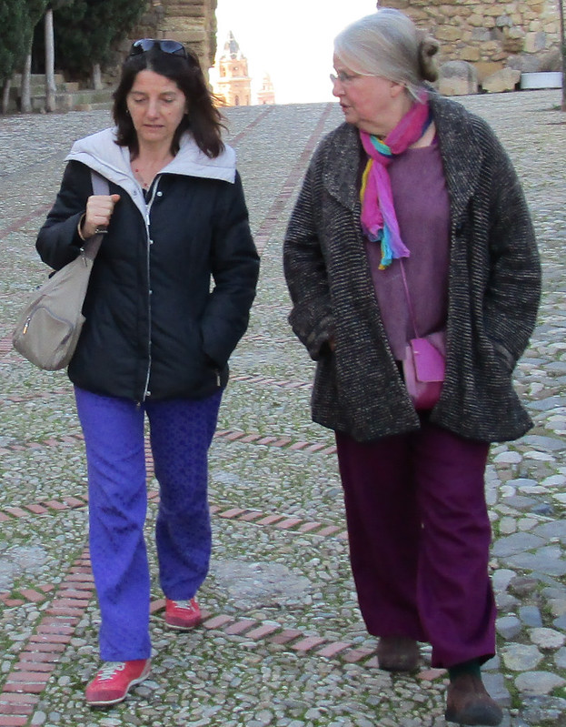
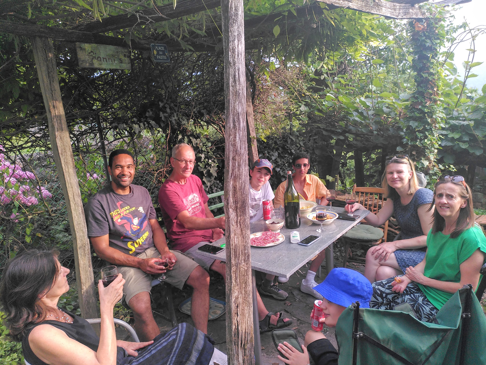
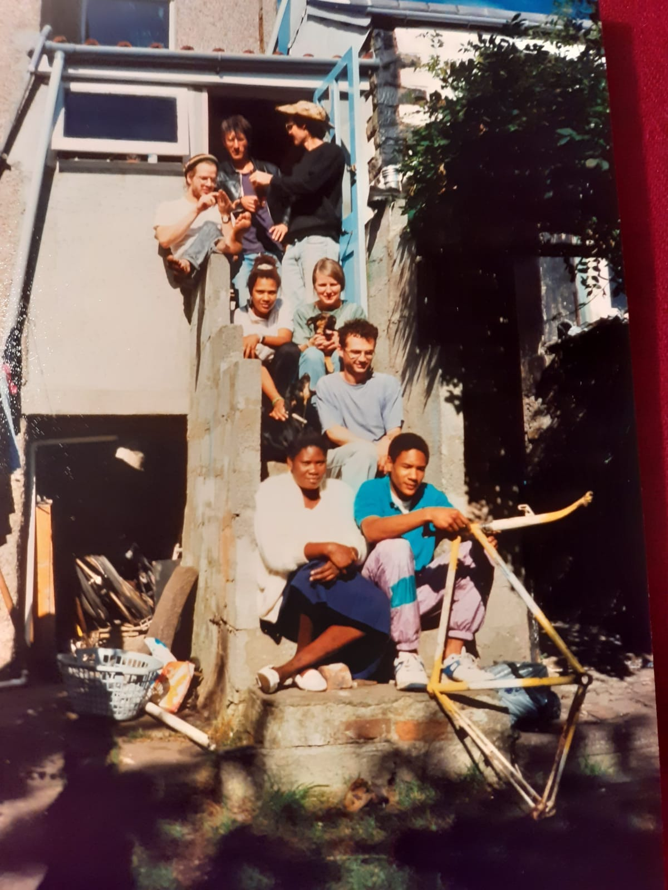
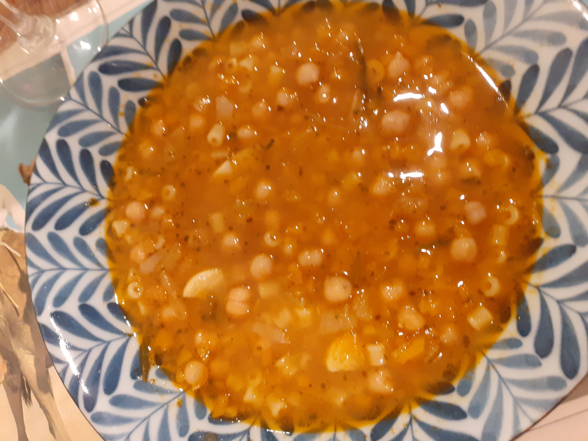

3 A recipe from Candida

3.1 Pasta e ceci

3.1.1 Ingredients:
serves 6
4 cloves garlic
1 small onion
2 small carrots
2 sticks celery
tomato puree or 6 plum tomatoes
use 300gr dry chickpeas soaked overnight and then boiled OR
two tins of chickpeas drained and washed.
small pasta or broken up spaghetti
2 sprigs rosemary stock or stockcube of your choice
1/2 chilli optional
pepper/ salt( not a lot if using cubes)
olive oil
Make a soffritto with olive oil, the onion/carrots/celery chopped veryvery small add garlic, sautee, do not burn…..
add tomatoes (chopped) or puree, little water, rosemary sprigs, stock or cube and water add drained chick peas from tin OR if using the dry ones add the soffritto etc to the pan with the cooked chickpeas, boil together for a while.
add the pasta , boil until cooked
A lovely thick soup for any season…… I have been cooking it for years…..
Hope it’s all clear…..
Hope to see you soon in Italy Judy…..or che toi in Antequera! Cannot believe we met over 40 years ago! Buon appetito Candida